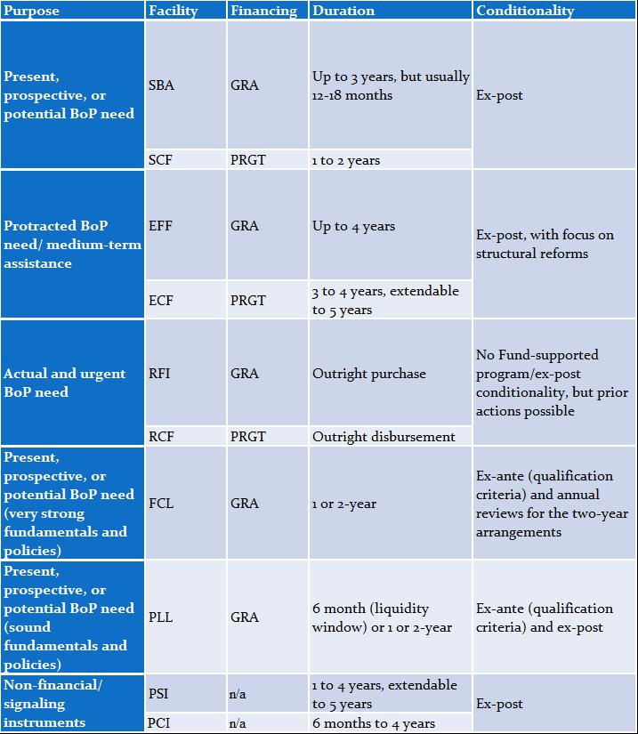

IMF Lending
February 22, 2021
The IMF assists countries hit by crises by providing them financial support to create breathing room as they implement adjustment policies to restore economic stability and growth. It also provides precautionary financing to help prevent and insure against crises. The IMF’s lending toolkit is continuously refined to meet countries’ changing needs.
Why do crises occur?
The causes of crises are varied and complex, and can be domestic, external, or both.
-
Domestic factors include inappropriate fiscal and monetary policies, which can lead to large economic imbalances (such as large current account and fiscal deficits and high levels of external and public debt); an exchange rate fixed at an inappropriate level, which can erode competitiveness and lead to persistent current account deficits and loss of official reserves; and a weak financial system, which can create economic booms and busts. Political instability and/or weak institutions can also trigger crises by exacerbating economic vulnerabilities.
-
External factors include shocks ranging from natural disasters to large swings in commodity prices. These are common causes of crises especially for low-income countries, which have limited capacity to prepare for such shocks and are dependent on a narrow range of export products. Also, in an increasingly globalized economy, sudden changes in market sentiment can result in capital flow volatility. Even countries with sound fundamentals could be severely affected by the impact of economic crises and policies in other countries. The COVID-19 pandemic is another example of external shock affecting countries across the globe.
Whether the cause is domestic or external in origin, crises can take many different forms: balance of payment problems occur when a nation is unable to pay for essential imports or service its external debt repayments; financial crises stem from illiquid or insolvent financial institutions; and fiscal crises are caused by excessive fiscal deficits and debt. Often, countries that come to the IMF face more than one type of crisis as challenges in one sector spread throughout the economy. Crises generally result in sharp slowdown in growth, higher unemployment, lower incomes and greater uncertainty which cause a deep recession. In acute crisis cases, defaults or restructuring of sovereign debt may become unavoidable.
How IMF lending helps
IMF lending aims to give countries breathing room to implement adjustment policies in an orderly manner, which will restore conditions for a stable economy and sustainable growth. These policies will vary depending upon the country’s circumstances. For instance, a country facing a sudden drop in the prices of key exports may need financial assistance while implementing measures to strengthen the economy and widen its export base. A country suffering from severe capital outflows may need to address the problems that led to the loss of investor confidence—perhaps interest rates are too low; the budget deficit and debt stock are growing too fast; or the banking system is inefficient or poorly regulated.

In the absence of IMF financing, the adjustment process for the country could be more abrupt and difficult. For example, if investors are unwilling to provide new financing, the country would have no choice but to adjust—often through a painful compression of government spending, imports and economic activity. IMF financing facilitates a more gradual and carefully considered adjustment. As IMF lending is usually accompanied by a set of corrective policy actions, it also provides a seal of approval that appropriate policies are taking place.
The IMF’s various lending instruments are tailored to different types of balance of payments need as well as the specific circumstances of its diverse membership (see table). All IMF members are eligible to access the Fund’s resources in the General Resources Account (GRA) on non-concessional terms, but the IMF also provides concessional financial support (currently at zero interest rates through June 2021) through the Poverty Reduction and Growth Trust (PRGT; see IMF Support for Low-Income Countries), which is better tailored to the diversity and needs of low-income countries. Historically, for emerging and advanced market economies in crises, the bulk of IMF assistance has been provided through Stand-By Arrangements (SBAs) to address short-term or potential balance of payments problems. The Standby Credit Facility (SCF) serves a similar purpose for low-income countries. The Extended Fund Facility (EFF) and the corresponding Extended Credit Facility (ECF) for low-income countries are the Fund’s main tools for medium-term support to countries facing protracted balance of payments problems. Their use has increased substantially since the global financial crisis, reflecting the structural nature of some members’ balance of payments problems.
To help prevent or mitigate crises and boost market confidence during periods of heightened risks, members with already strong policies can use the Flexible Credit Line (FCL) or the Precautionary and Liquidity Line (PLL).
The Rapid Financing Instrument (RFI) and the corresponding Rapid Credit Facility (RCF) for low-income countries provide rapid assistance to countries with urgent balance of payments need, including from commodity price shocks, natural disasters, and domestic fragilities.
Reflecting different country circumstances, GRA-supported programs are expected to resolve the member’s BoP problems during the program period, while PRGT programs envisage a longer duration for addressing BoP problems.
IMF lending in action
The IMF has responded to the coronavirus crisis with unprecedented speed and magnitude of financial assistance to help countries, notably to protect the most vulnerable and set the stage for economic recovery. For more information on the IMF's Response to COVID-19, click here.
The IMF provides financial support for balance of payments needs upon request by its member countries. Unlike development banks, the IMF does not lend for specific projects. Following such a request, an IMF staff team holds discussions with the government to assess the economic and financial situation, and the size of the country’s overall financing needs, and agree on the appropriate policy response.
Typically, a country’s government and the IMF must agree on a program of economic policies before the IMF provides lending to the country. A country’s commitments to undertake certain policy actions, known as policy conditionality, are in most cases an integral part of IMF lending (see table). This policy program underlying an arrangement is in most cases presented to the Fund’s Executive Board in a “Letter of Intent” and further detailed in a “Memorandum of Understanding”.
Progress is typically reviewed by monitoring the implementation of the policy actions. However, for some arrangements, countries can use IMF resources with no or limited conditionality if they have already established their commitment to sound policies (FCL, PLL) or where they are designed for urgent and immediate needs, for instance, because of the transitory and limited nature of the shock or where policy implementation capacity is limited, including due to fragilities (RFI, RCF). A country’s return to economic and financial health ensures that IMF funds are repaid so that they can be made available to other member countries.
Once an understanding has been reached on policies and a financing package, a recommendation is made to the IMF’s Executive Board to endorse the country’s policy intentions and extend access to IMF resources. This process can be expedited under the IMF’s Emergency Financing Mechanism.

**To note: The PSI and PCI do not provide financial support, but the PSI is a PRGT instrument while the PCI applies to both PRGT and GRA.
For information on the IMF’s lending arrangement with countries, click here.
For weekly summary of financial assistance to member countries in support of their policy programs, click here.